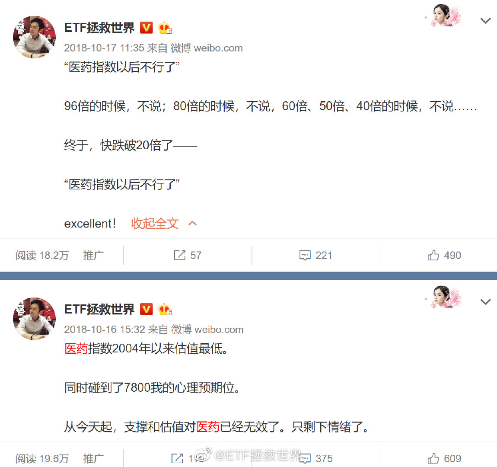
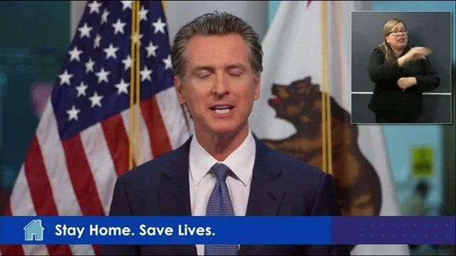

我觉得挺好。融合了中国传统的乡村、奇趣、宗教以及色彩的审美。不走寻常路，期待！@新财富杂志:【#恒大莲花状足球场#：许家印亲自构思，大家来感受一下】 4月16日讯 位于番禺区的广州首座世界级专业足球场已经进入开工阶段。该球场采用荷花造型，由许家印亲自构思。恒大以68亿元底价拿下广州番禺区谢村体育设施地块及产业地块。这个恒大新足球场项目占地近50万平方米，计容建面94.1998万平方米，挂牌起始总价达68.1亿元。PP体育的微博视频 271万次播放 00:60
我说的“极限点位”，是我的投资体系中的一个趋势判断系统。这个极限点位未必不会破，就像2018年，医药我的极限点位是7800，跌破后又跌了10%才见底。因为有时候有极端情绪等等因素。不会每次都那么精准，但一定是在那个点位周围的一个区域，不会偏离太多。 
有朋友私信我说，怎么医药极限位最高才15500吗，2015年都到过了啊。各位要清楚，2015是一个非常特殊的年份，光正规两融就2万多亿，配资也有几万亿。当时医药市盈率超过100倍。那已经极度脱离正常情况了。当年的极限位应该在11000左右。如果下次还能来几万亿的杠杆，那我说的15500你就当没看见就行了。@ETF拯救世界:目前医药已经运行到相对高估+牛市上升趋势阶段。这个阶段非常难。难在它不是便宜的阶段，可以买可以安心持仓。它虽然是上升趋势，但随时会转头向下。这个区间考虑的不是加仓，而是如何动态平衡。既然已经到了这个区间，就照例给一个区间上限。目前医药的区间上限是15500左右。这个点位是特大级超级牛市的极限点位。当然，首先是11600站稳了再说吧……
为什么我觉得这个长得像《独立日》里面美国总统的人更像美国总统应该是的样子……@王又又:#美国疫情# 加州州长Gavin Newsom14号宣布，将向居住在加州的非法移民提供现金付款，加州政府将拨款7500万美元，一群慈善组织已承诺再提供5000万美元，总计1.25亿美元。向15万名成年人每人发500美元。美联社估计加州有200万非法移民。他们没有资格获得国会上个月批准的2.2万亿美元刺激计划中的直接付款。加州的直接付款将不会根据收入分配，拿钱将不需要提供个人信息。Newsom：我们对那些担心被驱逐出境的人深表谢意，他们仍在满足数千万加州人的基本需求。加州10％的劳动力是非法移民，他们去年付了超过25亿美元州和地方税。 凤凰王又又的微博视频 46万次播放 01:21
对于一般人来说：第一轮牛熊市你会赚不到钱。因为你不知道宴席吃完了要赶紧走，最后你留下买单了。第二轮牛熊市你会赚的少。因为这一轮你有了上一轮的教训，吃几口凉菜就走了，最后你可能蹲路边看别人吃大餐，也可能别人吃完你又回来买单了。第三轮牛熊市，你会吃到大餐，并且在买单前悄悄离场逃单——如果你有足够的悟性。结论就是，一般有悟性的人，要经过三轮才能搞明白投资，这就是至少十年以上。当然，有些天赋异禀的，一轮就能弄明白。万中无一。不过大部分的人是一辈子经过4、5轮牛熊，依然没明白投资是怎么回事。次次买单，喷了。
 】 4月16日讯 位于番禺区的广州首座世界级专业足球场已经进入开工阶段。该球场采用荷花造型，由许家印亲自构思。恒大以68亿元底价拿下广州番禺区谢村体育设施地块及产业地块。这个恒大新足球场项目占地近50万平方米，计容建面94.1998万平方米，挂牌起始总价达68.1亿元。
】 4月16日讯 位于番禺区的广州首座世界级专业足球场已经进入开工阶段。该球场采用荷花造型，由许家印亲自构思。恒大以68亿元底价拿下广州番禺区谢村体育设施地块及产业地块。这个恒大新足球场项目占地近50万平方米，计容建面94.1998万平方米，挂牌起始总价达68.1亿元。 PP体育的微博视频
PP体育的微博视频